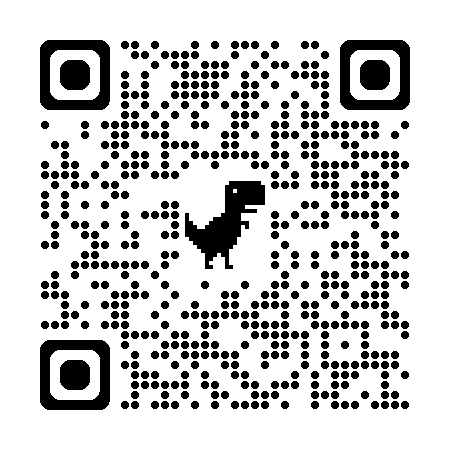

<ion-breadcrumbs >
    <ion-breadcrumb href="/login"> <ion-icon name="home" slot="end"></ion-icon> </ion-breadcrumb>
    <ion-breadcrumb href="/conductor">Conductor</ion-breadcrumb>
    <ion-breadcrumb href="/lista-cli">Lista Clientes</ion-breadcrumb>
    <ion-breadcrumb href="/encuentro">Preparar Viaje</ion-breadcrumb>
    <ion-breadcrumb href="/espera">Espera</ion-breadcrumb>
</ion-breadcrumbs>
<div> 
   
   <br>
   <br>
   <br>
   <ion-progress-bar [buffer]="buffer" [value]="progress"></ion-progress-bar>
   <br>
    <br>
   <br>
    
    <ion-item>
        <ion-button color="warning" style="margin-left: 150px;" fill="outline" shape="round" >Esperando <ion-spinner name="dots"></ion-spinner></ion-button>    
    </ion-item>
</div>


